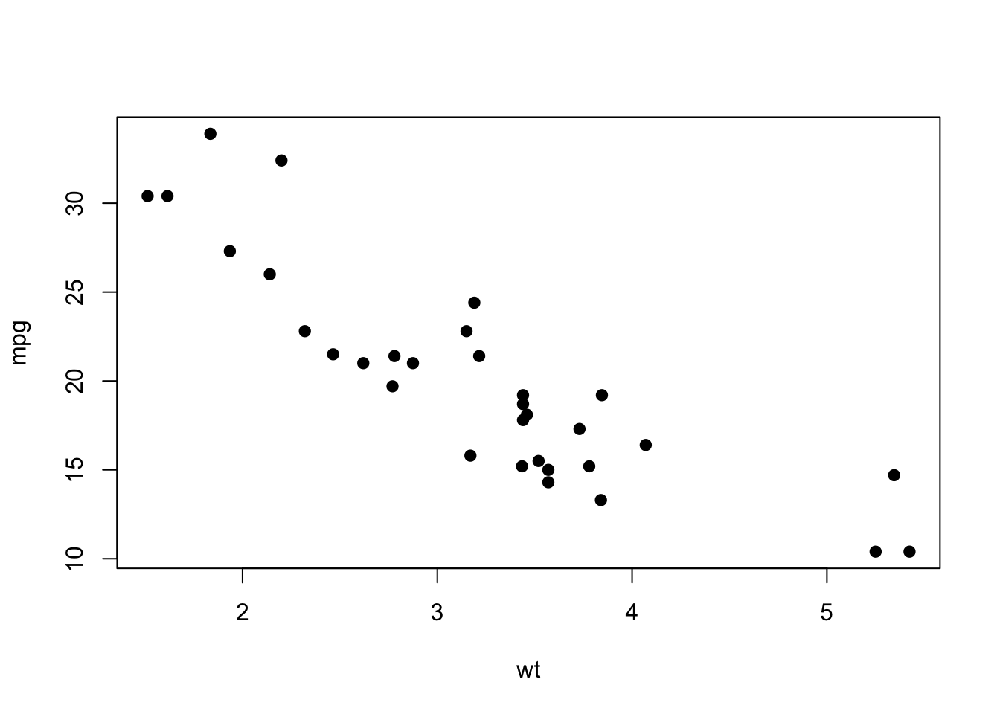
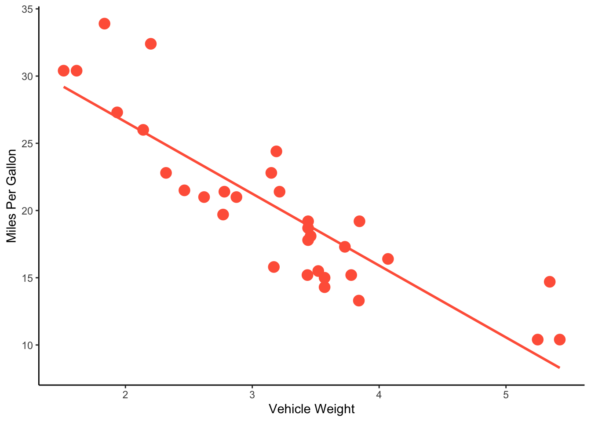
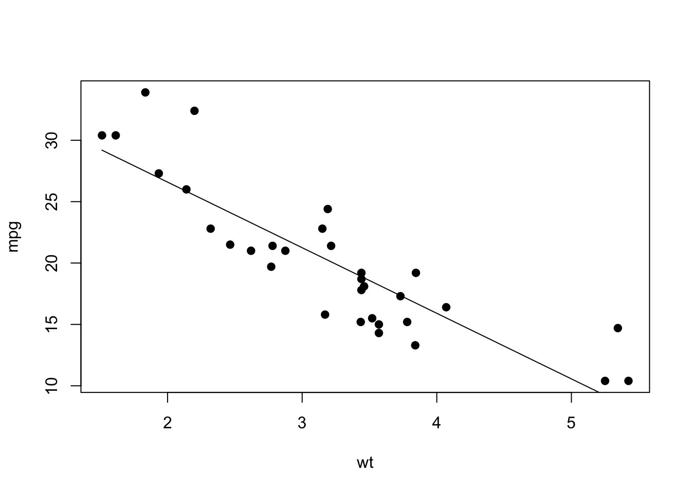
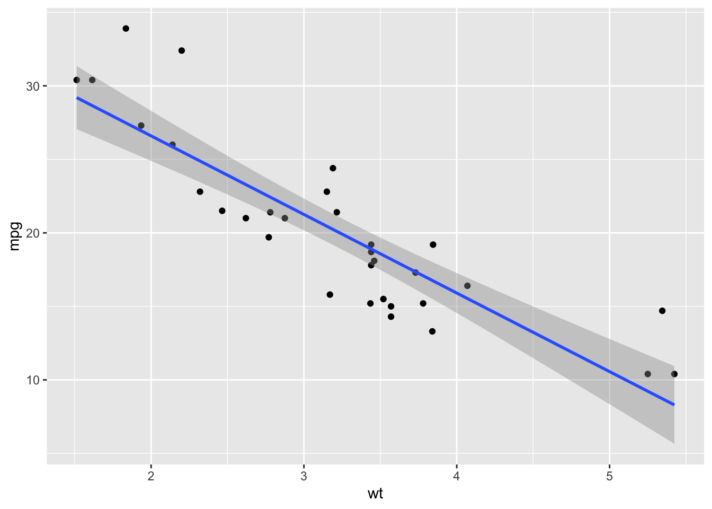
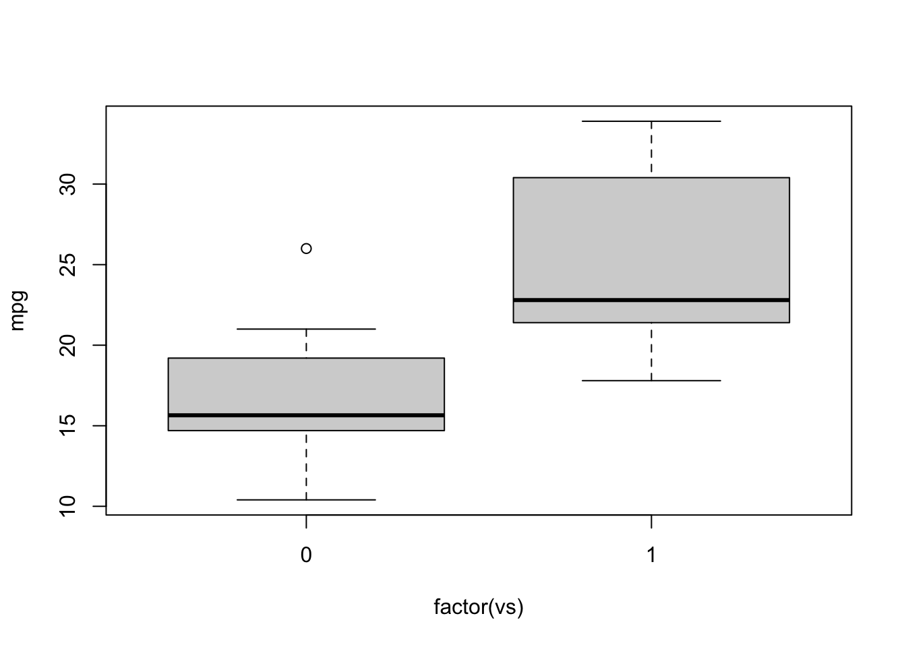
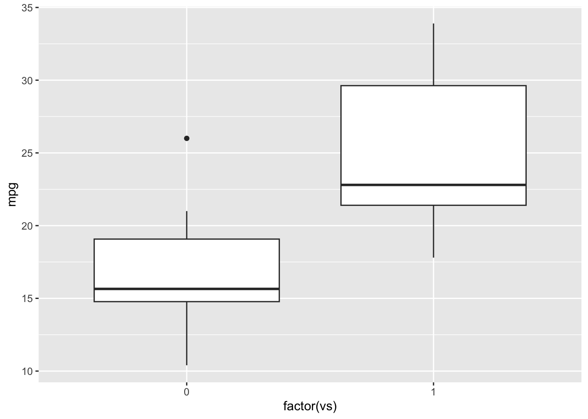
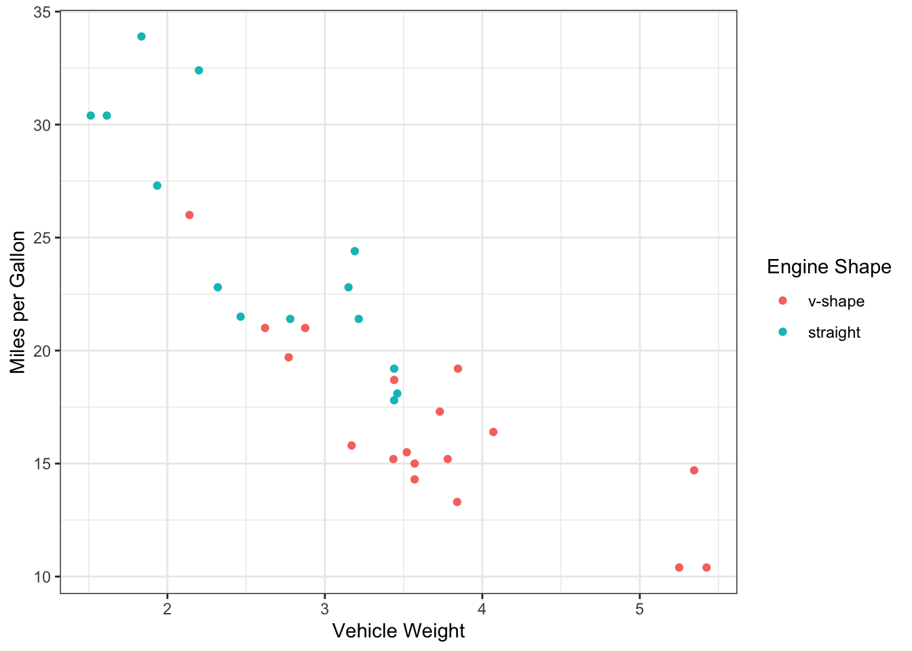
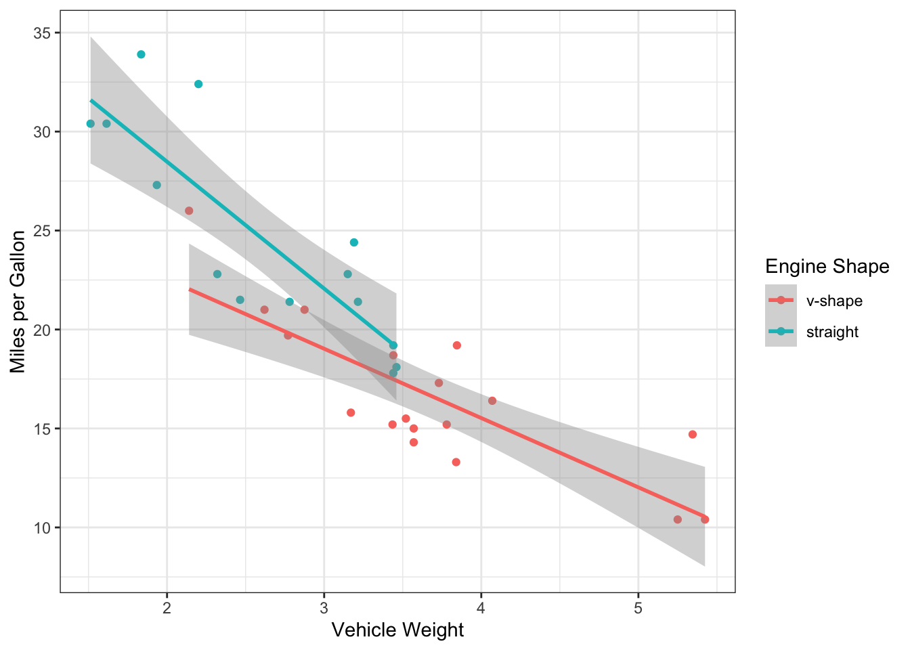
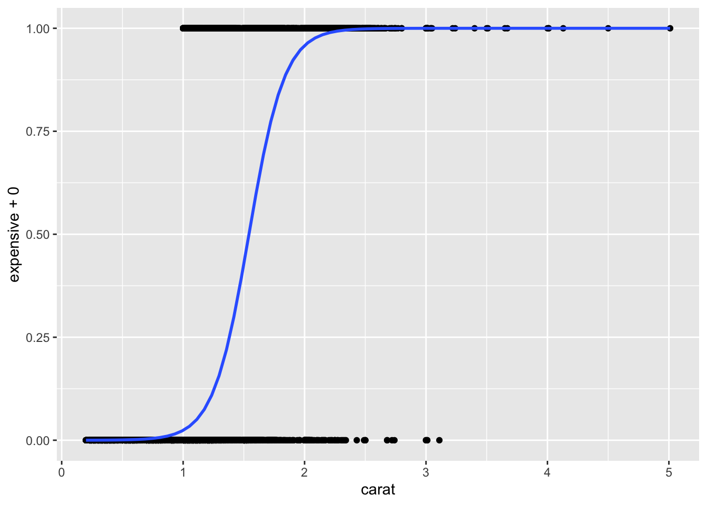
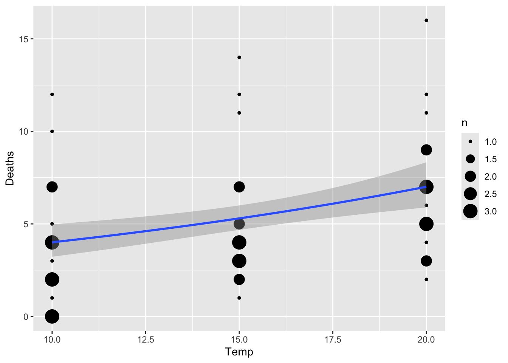

Module 6: Intro to Stats in R: Linear Models (GLM), including ANOVA
Dai Shizuka
updated 11/05/24
Many, if not most users of R take advantage of the powerful set of statistical tools available in the programming language. Particularly powerful are the myriad of user-generated packages (over 18,000 as of September 2022). It is pretty much true that, if there is a package for any conceivable type of statistical analysis!
There is no way that I can write modules to cover all of the types of statistical analyses out there. Here, my goal will be to outline the basics of how to conduct one of the most flexible and widely-used statistical analyses across biology: Linear Models. I will cover the basics of how to implement these in base R. Hopefully this will give you a baseline knowledge of how analyses work, and the basic syntax that is pretty common across most stats packages. I will also cover the basics of how to implement visualizations of statistical tests (where appropriate).
Load packages you will need for this module:
library(ggplot2)
library(MASS)if you dont’ have the package installed on your computer,
remember to run the install.packages() function (e.g.,
`install.packages(“MASS”))
1. Choosing statistical models based on data properties
It is worth first considering what kind of data you have, and which one(s) is/are predictor variable(s) and which one is the response variable.
1.1. What kind of data do you have?
Numbers
Continuous data: Numbers that can take on any value.
Binary data: Data that are 0/1 (e.g., death/survival, below/above a threshold, etc.)
Count data: Integers (e.g., number of plants, number of hits, etc.)
Proportion data: These can take a value between 0 and 1.
Factors (i.e., Categorical Data)
1.2. Predictor vs. response variable
Statistical analyses seek to determine the effect of the predictor variable(s) on a response variable (or, for multivariate analyses, multiple response variables).
Here are some of the most common scenarios:
If you have a continuous predictor AND continuous response variable… use linear regression or Generalized Linear Model (GLM) with Gaussian distribution
If you have a continuous predictor AND binary response variable… use GLM w/ “binomial” family (aka logistic regression)
If you have a continuous predictor AND counts as response variable… use GLM w/ “Poisson” family (aka Poisson regression)
If you have a continuous predictor AND proportions as response variable… use GLM w/ “binomial” or Quasi-binomial” family
If you have a categorical predictor AND continuous response variable… use ANOVA (or t-test, if you are just comparing means), which can be run as linear model or GLM.
If you have categorical predictor AND counts as response variable… use Chi-square tests.
If you have multiple predictors, with some continuous and some categorical variables… You can still use linear regression / GLM!
Everything is a GLM!
You will notice from above that everything I’ve listed falls under “GLM” or Generalized Linear Model. GLMs are super useful and flexible, and goes beyond a lot of the “parametric statistics” that you may first learn in basic stats class. It is one of the most common forms of statistical analyses in biology (I think… at least in my fields of ecology/evolution/behavior), so it is a good place to start! Here is a link to a page by Jonas Kristoffer Lindeløv that I have found quite helpful: https://lindeloev.github.io/tests-as-linear/
2. Linear Regression, an example with mtcars
2.1. Fitting a linear model and seeing the results
Let’s start by exploring the effect of one continuous variable on another continuous variable using a linear regression.
One easy way to think about linear regression is that it is appropriate whenever your predictor and response variables can be plotted as a scatterplot.
To demonstrate linear regression, we will use a dataset called
mtcars. This is a dataset on the performance of car models
from 1974 Motor Trend US magazine.
?mtcarshead(mtcars)## mpg cyl disp hp drat wt qsec vs am gear carb
## Mazda RX4 21.0 6 160 110 3.90 2.620 16.46 0 1 4 4
## Mazda RX4 Wag 21.0 6 160 110 3.90 2.875 17.02 0 1 4 4
## Datsun 710 22.8 4 108 93 3.85 2.320 18.61 1 1 4 1
## Hornet 4 Drive 21.4 6 258 110 3.08 3.215 19.44 1 0 3 1
## Hornet Sportabout 18.7 8 360 175 3.15 3.440 17.02 0 0 3 2
## Valiant 18.1 6 225 105 2.76 3.460 20.22 1 0 3 1First, let’s plot something… like the relationship between the weight of the car (variable “wt”) and its fuel efficiency (variable “mpg”)
plot(mpg~wt, data=mtcars, pch=19)
You can see there is going to be some strong relationship here. Let’s
investigate this as a linear regression using the function
lm().
First, try just running the lm() function. Here, you are
going to use the syntax y~x for the formula argument. This
format where the response and predictor variables are linked with the
tilde (~) is pretty much the default in statistical functions in R:
lm(mpg~wt, data=mtcars)##
## Call:
## lm(formula = mpg ~ wt, data = mtcars)
##
## Coefficients:
## (Intercept) wt
## 37.285 -5.344You see that this function gives you pretty minimal output, with just
the coefficients corresponding to the intercept value and the slope.
This corresponds to a and b in the traditional
equation for simple linear regression:
\(y = a + bx\)
But to get other parameters such as \(R^2\) and P-value, you need to use the
summary() function. A typical way to do this is to assign
the linear model to an object, and then get the summary for this
object
lm.mod=lm(mpg~wt, data=mtcars)
summary(lm.mod)##
## Call:
## lm(formula = mpg ~ wt, data = mtcars)
##
## Residuals:
## Min 1Q Median 3Q Max
## -4.5432 -2.3647 -0.1252 1.4096 6.8727
##
## Coefficients:
## Estimate Std. Error t value Pr(>|t|)
## (Intercept) 37.2851 1.8776 19.858 < 2e-16 ***
## wt -5.3445 0.5591 -9.559 1.29e-10 ***
## ---
## Signif. codes: 0 '***' 0.001 '**' 0.01 '*' 0.05 '.' 0.1 ' ' 1
##
## Residual standard error: 3.046 on 30 degrees of freedom
## Multiple R-squared: 0.7528, Adjusted R-squared: 0.7446
## F-statistic: 91.38 on 1 and 30 DF, p-value: 1.294e-10You can see this is a very strong relationship, with \(R^2 = 0.74\) and very low P-value.
2.2. Visualizing the results: Best fit line on a scatterplot
We can plot this relationship onto the scatterplot.
ggplot2 makes fitting the line quite easy for generic statistical models. The basic work flow is to:
Assign the data and aesthetic mapping
Plot scatterplot using
geom_point()Add fit line using
geom_smooth(). Here, you will use the argumentmethod=to tell it that you want to use a linear model (“lm”)
*Note: you will need to assign the aesthetic mapping in the
ggplot() function rather than the geom_point()
function here, because you want to use the same mapping for two
geometric objects (i.e., geom_point() and
geom_smooth())
ggplot(mtcars, aes(x=wt, y=mpg)) +
geom_point() +
geom_smooth(method="lm")## `geom_smooth()` using formula = 'y ~ x'
You will notice that ggplot adds the confidence interval (the shaded
part) by default. If you don’t want that, you can remove it within the
geom_smooth() function. Let’s do that and also clean up the
plot settings:
ggplot(mtcars, aes(x=wt, y=mpg)) +
geom_point(size=4, color="tomato") +
geom_smooth(method="lm", se=FALSE, color="tomato") +
theme_classic() +
ylab("Miles Per Gallon") +
xlab("Vehicle Weight")## `geom_smooth()` using formula = 'y ~ x'
You can also do this in base R, though admittedly it’s a bit more complex. Basically, you Here’s a version in base R:
lm.mod=lm(mpg~wt, data=mtcars) # fit the linear model
xv=seq(min(mtcars$wt), max(mtcars$wt), length=2) # set a series of values along the x-axis
yv=predict(lm.mod, data.frame(wt=xv)) # use predict() to get what the y-axis value should be along each of those x-axis values
plot(mpg~wt, data=mtcars, pch=19) #plot the scatterplot
lines(xv, yv) #add the fit line 
2.3. Linear regression as a form of GLM
I mentioned in Section 1.2 above that linear regression is the same as GLM with a “Gaussian” family (when we assume that the residuals are distributed in a “Gaussian” distribution – i.e., normal distribution)
To demonstrate this, let’s just fit the same model using two
different functions, the lm() function and
glm() function. For the glm() function, we
include the argument that we want to use the “gaussian” family. This
argument will become important later, when we use different forms of
GLMs.
lm.fit=lm(mpg~wt, mtcars)
glm.fit=glm(mpg~wt, mtcars, family="gaussian")Here is the output from the lm() function.
summary(lm.fit)##
## Call:
## lm(formula = mpg ~ wt, data = mtcars)
##
## Residuals:
## Min 1Q Median 3Q Max
## -4.5432 -2.3647 -0.1252 1.4096 6.8727
##
## Coefficients:
## Estimate Std. Error t value Pr(>|t|)
## (Intercept) 37.2851 1.8776 19.858 < 2e-16 ***
## wt -5.3445 0.5591 -9.559 1.29e-10 ***
## ---
## Signif. codes: 0 '***' 0.001 '**' 0.01 '*' 0.05 '.' 0.1 ' ' 1
##
## Residual standard error: 3.046 on 30 degrees of freedom
## Multiple R-squared: 0.7528, Adjusted R-squared: 0.7446
## F-statistic: 91.38 on 1 and 30 DF, p-value: 1.294e-10We get the exact same output from the glm()
function!
summary(glm.fit)##
## Call:
## glm(formula = mpg ~ wt, family = "gaussian", data = mtcars)
##
## Coefficients:
## Estimate Std. Error t value Pr(>|t|)
## (Intercept) 37.2851 1.8776 19.858 < 2e-16 ***
## wt -5.3445 0.5591 -9.559 1.29e-10 ***
## ---
## Signif. codes: 0 '***' 0.001 '**' 0.01 '*' 0.05 '.' 0.1 ' ' 1
##
## (Dispersion parameter for gaussian family taken to be 9.277398)
##
## Null deviance: 1126.05 on 31 degrees of freedom
## Residual deviance: 278.32 on 30 degrees of freedom
## AIC: 166.03
##
## Number of Fisher Scoring iterations: 2This also means that we can use the glm function to plot the fit line
(if you want). To do this, you can specify the argument inside the stats
function using method.args= and specifying the arguments as
a list:
ggplot(mtcars, aes(x=wt, y=mpg)) +
geom_point() +
geom_smooth(method="glm", method.args=list(family="gaussian"))## `geom_smooth()` using formula = 'y ~ x'
pssst… There ARE differences between the output of
lm()andglm()Ok, in this simple example with one predictor variable, we see that there is no difference between
lm()andglm(). However, that’s not the whole truth… While it is true that the model fit here are identical, there ARE subtle differences in how the output of the model is packaged when you run these two different functions. But we will cross that bridge when we come to it!
3. ANOVA: Comparing a continuous variable across groups
3.1. Fitting an ANOVA
Analysis of Variance (ANOVA) is a way to compare whether groups (e.g., different sites, different treatments, etc.) differ in some measured continuous variable. What ANOVA does is partition variation into within-group and across-group variation. We conclude that groups are different if the variation across groups is much larger than the variation within groups.
Let’s take another look at the mtcars data, but this
time let’s look at the effect of shape of the engine on fuel efficiency
(“mpg”).

straigh engine and v-shaped engine
The help file for the mtcars dataset (get this with
?mtcars) says that this variable is binary, with 0 =
v-shape and 1 = straight.
IMPORTANT thing to notice here before we delve in… Since this variable is coded as 0/1, R actually thinks it is a ‘numeric’ variable.
class(mtcars$vs)## [1] "numeric"This means that we want to be careful about fitting ANOVAs using this
variable. In this case, 0 and 1 are different categories, but we don’t
care that 0 < 1. This will matter later. For now, know that we can
simply have R interpret this variable as a category (or ‘factor’) by
using the factor() function:
class(factor(mtcars$vs))## [1] "factor"Ok, now let’s visualize the pattern using a simple boxplot. Remember
to use indicate that we want “vs” to be interpreted as factor. We can
actually use the formula synatx inside the generic plot()
function, and R will know to plot it as a boxplot if we have a factor as
the predictor variable:
plot(mpg~factor(vs), data=mtcars)
*Note: contrast this with the case if we don’t use factor()
in the function (not displaying the plot here)
plot(mpg~vs, data=mtcars)… plotting with ggplot
ggplot(mtcars, aes(x=factor(vs), y=mpg)) +
geom_boxplot()
Running ANOVA
We get the sense that there are some differences in fuel efficiency
based on engine shape. Let’s test this hypothesis with ANOVA using the
aov() function. The basic syntax is the same as
lm()
aov.mod=aov(mpg~factor(vs), data=mtcars)
summary(aov.mod)## Df Sum Sq Mean Sq F value Pr(>F)
## factor(vs) 1 496.5 496.5 23.66 3.42e-05 ***
## Residuals 30 629.5 21.0
## ---
## Signif. codes: 0 '***' 0.001 '**' 0.01 '*' 0.05 '.' 0.1 ' ' 1The output answers are major question: Yes, there is a significant difference in fuel efficiency based on engine shape.
3.2. ANOVA is a Linear Model, which is a GLM…
It turns out that ANOVAs are just a type of linear model in which the
predictor variable is categorical. This means that we can actually run
the ANOVA using the lm() function as well! However, there
is a slight difference in how to get the results of test.
First, let’s fit the model using lm(). We’ll call is
lm.mod2 to distinguish from the model we’ve already done above:
lm.mod2=lm(mpg~factor(vs), data=mtcars)
lm.mod2##
## Call:
## lm(formula = mpg ~ factor(vs), data = mtcars)
##
## Coefficients:
## (Intercept) factor(vs)1
## 16.62 7.94So far so good. Let’s use the summary() function
again:
summary(lm.mod2)##
## Call:
## lm(formula = mpg ~ factor(vs), data = mtcars)
##
## Residuals:
## Min 1Q Median 3Q Max
## -6.757 -3.082 -1.267 2.828 9.383
##
## Coefficients:
## Estimate Std. Error t value Pr(>|t|)
## (Intercept) 16.617 1.080 15.390 8.85e-16 ***
## factor(vs)1 7.940 1.632 4.864 3.42e-05 ***
## ---
## Signif. codes: 0 '***' 0.001 '**' 0.01 '*' 0.05 '.' 0.1 ' ' 1
##
## Residual standard error: 4.581 on 30 degrees of freedom
## Multiple R-squared: 0.4409, Adjusted R-squared: 0.4223
## F-statistic: 23.66 on 1 and 30 DF, p-value: 3.416e-05I want you to notie two things. First, under “coefficients”, you see
the variable is listed as “eshapev” instead “eshape”. Second, the test
statistic is a ‘t-value’ instead of ‘F value’ that we got when we ran
the aov() function.
This is because when you use the summary() function to
test a linear model with categorical variables, it picks a ‘reference
value’ of that variable, which is simply the first level (if you haven’t
set it manually, it would just be the first value based on alphabetical
order), and then conducts pairwise comparisons between that reference
value and other values to generate t-statistics. In this case, it
matters little because there are only two values (“s” and “v”), but it
becomes more complicated when there are more than two levels of a
categorical variable (more examples below). To put it simply, it’s doing
a t-test.
Ok, now contrast that with results we get when we test the model fit
using a different function, anova().
anova(lm.mod2)## Analysis of Variance Table
##
## Response: mpg
## Df Sum Sq Mean Sq F value Pr(>F)
## factor(vs) 1 496.53 496.53 23.662 3.416e-05 ***
## Residuals 30 629.52 20.98
## ---
## Signif. codes: 0 '***' 0.001 '**' 0.01 '*' 0.05 '.' 0.1 ' ' 1Now, we get identical results as when we ran aov(), with
F value as the test statistic. This is a proper ANOVA.
ANOVA = LM = GLM
Since ANOVA is a linear model/regression, then we ought to be able to
do this whole thing in GLM also… and we can! The only difference is
that, when we run the anova() function, we have to make
sure we use the argument test="F to get the F
statistic.
glm.mod2=glm(mpg~factor(vs), data=mtcars, family="gaussian")
anova(glm.mod2, test="F")## Analysis of Deviance Table
##
## Model: gaussian, link: identity
##
## Response: mpg
##
## Terms added sequentially (first to last)
##
##
## Df Deviance Resid. Df Resid. Dev F Pr(>F)
## NULL 31 1126.05
## factor(vs) 1 496.53 30 629.52 23.662 3.416e-05 ***
## ---
## Signif. codes: 0 '***' 0.001 '**' 0.01 '*' 0.05 '.' 0.1 ' ' 14. Multiple predictor variables in a Linear Model
In many cases, you will be fitting a model in which you have multiple predictor variables. You can do this easily by adding variables to your formula.
Since we have looked at the relationships between fuel efficiency and vehicle weight, as well as engine shape above, let’s combine those into one model in which we look at how each of these variables contribute to explaining fuel efficiency of cars:
Let’s actually begin by visualizing these relationships. You can actually do this easily with ggplot. Here, we will plot mpg against weight, and then use engine shape as the point color. I’m adding info in the color scaling that the two levels for engine shape are “v-shape” and “straight” (in that order).
ggplot(mtcars, aes(x=wt, y=mpg, color=factor(vs))) +
geom_point() +
scale_color_discrete(name="Engine Shape",labels=c("v-shape", "straight")) +
ylab("Miles per Gallon") +
xlab("Vehicle Weight") +
theme_bw()
We can now actually add the fit lines using
geom_smooth() on top of this, and you will get two lines:
one for each engine shape. Note that this works because we’ve mapped the
aesthetics in the ggplot() function rather than the
geom_point() function (thus, the aesthetics apply as
default to geom_smooth() also).
ggplot(mtcars, aes(x=wt, y=mpg, color=factor(vs))) +
geom_point() +
scale_color_discrete(name="Engine Shape",labels=c("v-shape", "straight")) +
ylab("Miles per Gallon") +
xlab("Vehicle Weight") +
theme_bw() +
geom_smooth(method="lm")## `geom_smooth()` using formula = 'y ~ x' Now, we actually see some interesting patterns here.
We see that there v-shaped engines are primarily used in heavy cars… So is the difference we saw in mpg between the engine shapes actually driven by vehicle weight?
But it also seems like the mpg is systematically lower for v-shaped cars (the red line is below the teal line), so maybe there still is an effect after accounting for engine weight?
Finally, it looks like the slope of the two lines is a bit difference. Does that mean that the relationship between weight and mpg contingent on engine shape?
If we were just addressing the first two questions, we could run a model where we just add the two predictor variables in the formula:
lm.mod3=lm(mpg~ wt + factor(vs), data=mtcars)
anova(lm.mod3)## Analysis of Variance Table
##
## Response: mpg
## Df Sum Sq Mean Sq F value Pr(>F)
## wt 1 847.73 847.73 109.7042 2.284e-11 ***
## factor(vs) 1 54.23 54.23 7.0177 0.01293 *
## Residuals 29 224.09 7.73
## ---
## Signif. codes: 0 '***' 0.001 '**' 0.01 '*' 0.05 '.' 0.1 ' ' 1This model output suggests that most of the variation in mpg is explained by vehicle weight, but that there is also additional effect of engine shape. This is because the F value for weight is larger (and P-value is lower) than for engine shape.
However, what about pattern #3? Is the relationship between weight
& mpg contingent on the engine shape? To ask this question, we add
what is called the “interaction term” for weight and engine shape. We do
this by using * in the formula. This automatically each
variable AND their interaction term to the model:
lm.mod4=lm(mpg~ wt * factor(vs), data=mtcars)
anova(lm.mod4)## Analysis of Variance Table
##
## Response: mpg
## Df Sum Sq Mean Sq F value Pr(>F)
## wt 1 847.73 847.73 127.5924 6.121e-12 ***
## factor(vs) 1 54.23 54.23 8.1619 0.007978 **
## wt:factor(vs) 1 38.06 38.06 5.7287 0.023634 *
## Residuals 28 186.03 6.64
## ---
## Signif. codes: 0 '***' 0.001 '**' 0.01 '*' 0.05 '.' 0.1 ' ' 1So, the take away is that there is a significant interaction between vehicle weight and engine shape on their effect on fuel efficiency.
What we did is called an ANCOVA
ANCOVA (Analysis of Covariance) is a linear model in which you have one continuous predictor variable and one categorical predictor variable, and you analyze whether the relationship between the continuous predictor and the continuour response variable is contingent on the categorical variable (i.e., whether there is covariance between the two predictor variables)
5. GLMs with binary, count and proportion data as response variable
GLMs extend the capability of Linear Models to data that are not
distributed continuously. Here, I’ll briefly introduce how to handle
those kinds of models with the glm() function.
4.1 Binary response variable (Logistic regression)
Logistic regression is used when the response variable is a binary 0/1.
Let’s use the diamonds dataset included in the ggplot2
package. This dataset shows the prices of over 50,000 diamonds with
associated attributes.
diamonds## # A tibble: 53,940 × 10
## carat cut color clarity depth table price x y z
## <dbl> <ord> <ord> <ord> <dbl> <dbl> <int> <dbl> <dbl> <dbl>
## 1 0.23 Ideal E SI2 61.5 55 326 3.95 3.98 2.43
## 2 0.21 Premium E SI1 59.8 61 326 3.89 3.84 2.31
## 3 0.23 Good E VS1 56.9 65 327 4.05 4.07 2.31
## 4 0.29 Premium I VS2 62.4 58 334 4.2 4.23 2.63
## 5 0.31 Good J SI2 63.3 58 335 4.34 4.35 2.75
## 6 0.24 Very Good J VVS2 62.8 57 336 3.94 3.96 2.48
## 7 0.24 Very Good I VVS1 62.3 57 336 3.95 3.98 2.47
## 8 0.26 Very Good H SI1 61.9 55 337 4.07 4.11 2.53
## 9 0.22 Fair E VS2 65.1 61 337 3.87 3.78 2.49
## 10 0.23 Very Good H VS1 59.4 61 338 4 4.05 2.39
## # ℹ 53,930 more rowsLet’s say we want to predict when a diamond will cost above a certain threshold price (let’s say $10,000). To do this, let’s make a new variable called “expensive”, which is TRUE if the diamond is priced at or above $10,000, and FALSE if not.
diamonds$expensive=diamonds$price >= 10000We can actually run the logistic regression with this FALSE/TRUE logical variable, but let’s go ahead and convert this variable to 0/1. We can do this by adding 0 to the logical variable. This will convert FALSE to 0 and TRUE to 1:
diamonds$expensive = diamonds$expensive + 0Now, we can test if the probability that a diamond is worth > $10,000 is dependent on its “carat”, or unit weight.
glm.fit=glm(expensive~carat, data=diamonds)
summary(glm.fit)##
## Call:
## glm(formula = expensive ~ carat, data = diamonds)
##
## Coefficients:
## Estimate Std. Error t value Pr(>|t|)
## (Intercept) -0.227495 0.001891 -120.3 <2e-16 ***
## carat 0.406453 0.002038 199.4 <2e-16 ***
## ---
## Signif. codes: 0 '***' 0.001 '**' 0.01 '*' 0.05 '.' 0.1 ' ' 1
##
## (Dispersion parameter for gaussian family taken to be 0.05033729)
##
## Null deviance: 4717.3 on 53939 degrees of freedom
## Residual deviance: 2715.1 on 53938 degrees of freedom
## AIC: -8148.1
##
## Number of Fisher Scoring iterations: 2If we want an F statistic:
anova(glm.fit, test="F")## Analysis of Deviance Table
##
## Model: gaussian, link: identity
##
## Response: expensive
##
## Terms added sequentially (first to last)
##
##
## Df Deviance Resid. Df Resid. Dev F Pr(>F)
## NULL 53939 4717.3
## carat 1 2002.2 53938 2715.1 39775 < 2.2e-16 ***
## ---
## Signif. codes: 0 '***' 0.001 '**' 0.01 '*' 0.05 '.' 0.1 ' ' 1Here is how you can visualize this type of regression:
ggplot(diamonds, aes(x=carat, y=expensive+0))+
geom_point() +
geom_smooth(method="glm", method.args = list(family = "binomial"))## `geom_smooth()` using formula = 'y ~ x'
4.2. GLM with count and proportional data
Here we will use the “snail” dataset from the “MASS” package. This dataset includes the results of an experiment in which snails were held for 1,2, 3, or 4 weeks under controlled temperature and relative humidity.
head(snails)## Species Exposure Rel.Hum Temp Deaths N
## 1 A 1 60.0 10 0 20
## 2 A 1 60.0 15 0 20
## 3 A 1 60.0 20 0 20
## 4 A 1 65.8 10 0 20
## 5 A 1 65.8 15 0 20
## 6 A 1 65.8 20 0 20Notice that “Deaths” is count data. There is also the total number of snails exposed under each condition (N), so the death data can also be converted to proportions.
Let’s fit the Poisson regression using the count of deaths as the
response variable. I’m going to restrict the analysis to snails held for
3 or 4 weeks because we expect the effect to be less apparent if the
snails are kept in the experiment for a short amount of time. We can do
that by using the subset argument within
glm(). We also set family="poisson.
count.fit=glm(Deaths~Temp, data=snails, subset=which(Exposure>=3), family="poisson")
summary(count.fit)##
## Call:
## glm(formula = Deaths ~ Temp, family = "poisson", data = snails,
## subset = which(Exposure >= 3))
##
## Coefficients:
## Estimate Std. Error z value Pr(>|z|)
## (Intercept) 0.82914 0.25375 3.268 0.00108 **
## Temp 0.05589 0.01546 3.615 0.00030 ***
## ---
## Signif. codes: 0 '***' 0.001 '**' 0.01 '*' 0.05 '.' 0.1 ' ' 1
##
## (Dispersion parameter for poisson family taken to be 1)
##
## Null deviance: 130.86 on 47 degrees of freedom
## Residual deviance: 117.53 on 46 degrees of freedom
## AIC: 276.11
##
## Number of Fisher Scoring iterations: 5Here’s a way to visualize the results in ggplot. Since there are
going to be multiple data points that overlap (common to see this in
count data), we will use the geom_count() function, which
makes a bubble plot with the size of bubbles corresponding to the number
of overlapping data points.
ggplot(snails[which(snails$Exposure>=3),], aes(x=Temp, Deaths)) +
geom_count() +
geom_smooth(method="glm", method.args=list(family="poisson"))## `geom_smooth()` using formula = 'y ~ x' We can also run the model with the response variable as proportion of deaths / N (though in this case it should make little difference since N is the same across the board). Here is how I might do that:
prop.fit=glm(cbind(Deaths, N)~Temp, data=snails, subset=which(Exposure>=3), family=binomial(link="logit"))
summary(prop.fit)##
## Call:
## glm(formula = cbind(Deaths, N) ~ Temp, family = binomial(link = "logit"),
## data = snails, subset = which(Exposure >= 3))
##
## Coefficients:
## Estimate Std. Error z value Pr(>|z|)
## (Intercept) -2.16897 0.28286 -7.668 1.75e-14 ***
## Temp 0.05604 0.01742 3.216 0.0013 **
## ---
## Signif. codes: 0 '***' 0.001 '**' 0.01 '*' 0.05 '.' 0.1 ' ' 1
##
## (Dispersion parameter for binomial family taken to be 1)
##
## Null deviance: 104.606 on 47 degrees of freedom
## Residual deviance: 94.093 on 46 degrees of freedom
## AIC: 241.71
##
## Number of Fisher Scoring iterations: 4